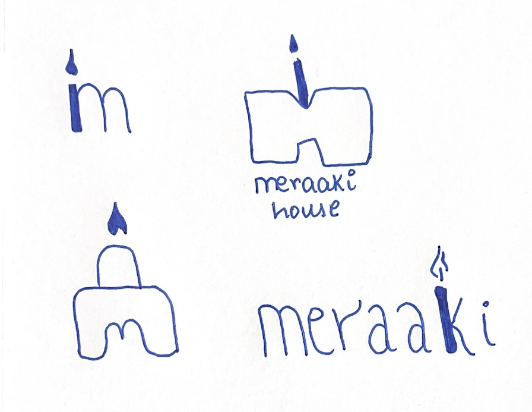

Meraaki
Overview
Meraaki is a logo I created for a bakery based in Mumbai, India. The brief I got was to include an element in the logo, that when a person sees the logo, it tells them that it is a bakery or patisseries logo. The founder also told me to keep it as simple as possible because her baking style is very minimalistic, and she wanted that to be illustrated in the logo.
Initial process
I started off by going through all the cakes that she makes. Then, I went and saw how she bakes to get a sense of her personality and how I could reflect that in the logo I create. My takeaways from that meeting were that she is so happy while baking and has fun with whatever she makes. Furthermore, I saw how elated she was after baking the cake, and her face lit up when she lit a candle on the cake. Looking at that, I realized that this can be the element that I illustrate on the logo. Her sense of precision and attention to detail is commendable, and I feel like it was essential for me to witness that before I start designing.
